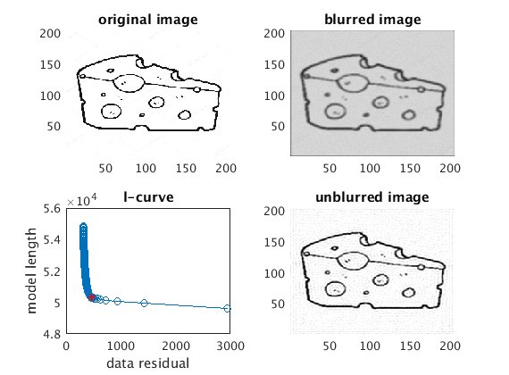

close all
pics = imread('cheese.jpg');
pics2 = flipud(double(pics(:,:,3)));
pics2 = pics2(1:5:end,1:5:end);
[n,m] = size(pics2);
npts = n*m;
idim = n;
subplot(2,2,1); pcolor(pics2); shading flat; box on; colormap gray; caxis([0 255]);
title('original image');
sig = 1.5;
wid = 3;
scale = 0.01.*(max(max(pics2)));
a = [exp(-([0:wid-1].^2)./(2*sig.^2)), zeros(1,idim-wid)];
g = toeplitz(a);
g = sparse(g);
g = (1/(2.*pi.*sig.^2)).*kron(g,g);
gs = sparse(g);
d = gs*reshape(pics2,npts,1)+(scale.*randn(npts,1));
di = reshape(d, n,m);
subplot(2,2,2); pcolor(di); shading flat; colormap gray; box on; caxis([0 255]);
title('blurred image');
m0 = zeros(npts,1);
s0 = d-(gs*m0);
r0 = gs'*s0;
p0 = r0;
q0 = gs*p0;
nints = 100;
mk_all = [];
m_all = [];
d_all = [];
for k=1:nints
if k == 1
rk = r0;
qk = q0;
mk = m0;
pk = p0;
sk = s0;
end
ak1 = (rk'*rk)./(qk'*qk);
mk1 = mk+(ak1*pk);
sk1 = sk-(ak1*qk);
rk1 = (gs'*sk1);
bk1 = (rk1'*rk1)./(rk'*rk);
pk1 = rk1+(bk1'*pk);
qk1 = (gs*pk1);
rk = rk1;
qk = qk1;
mk = mk1;
pk = pk1;
qk = qk1;
sk = sk1;
m_all = [m_all; sqrt(sum(mk'*mk))];
gm = gs*mk;
d_all = [d_all; sqrt(sum((gm-d)'*(gm-d)))];
mk_all = [mk_all mk];
end
subplot(2,2,3); hold on; box on;
plot(d_all, m_all, 'o-');
title('l-curve');
xlabel('data residual');
ylabel('model length');
idx = 14;
plot(d_all(idx), m_all(idx), 'r*');
mkp = mk_all(:,idx);
subplot(2,2,4); pcolor(reshape(mkp,n,m)); shading flat; box on; colormap gray; caxis([0 255]);
title('unblurred image');
